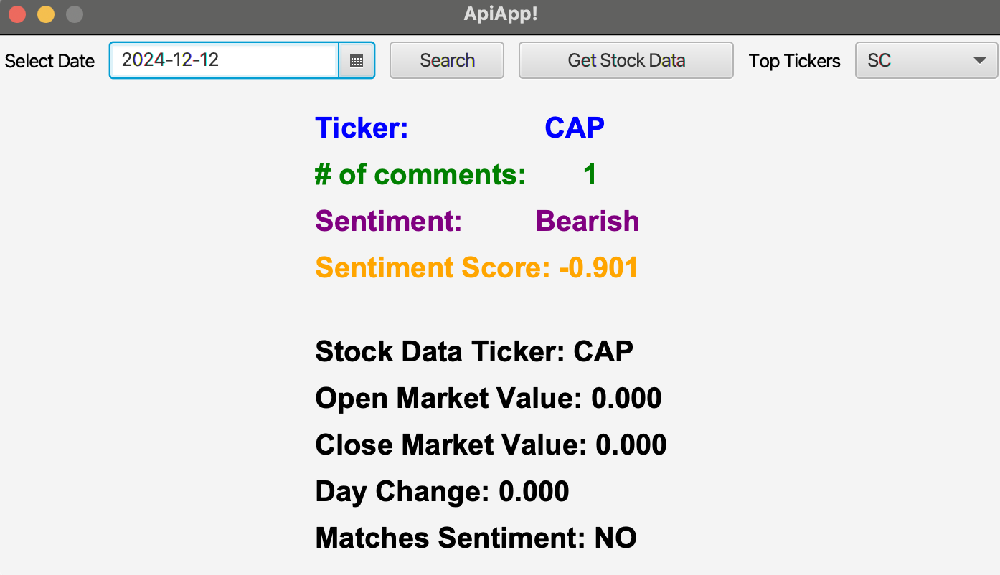
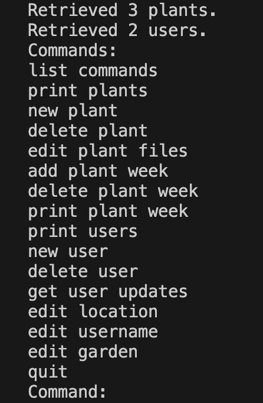

Projects

Facial Recognition Lock
- Built with a Raspberry Pi 4
- Logic designed with Python Machine Learning Libraries, paired with Open CV
- Hardware utilized two LEDs and a BJT npn transistor, and RPi4 I/O pins.

Wallstreet Bets Sentiment Stock Picker
- JFX Application that utilizes the Wallstreet Bets API, and a market data API
- Allows the user to select a date and a stock from that date and monitor the sentiment.
- Contains Market data from as far as two years ago

Edible Gardens Plant / User Storage
- Designed a File system I/O method of storing serialized plant and User objects
- Implemented an admin interface with JFX
- Admin could manage customers and their gardens graphically, and store the data for easy user management.